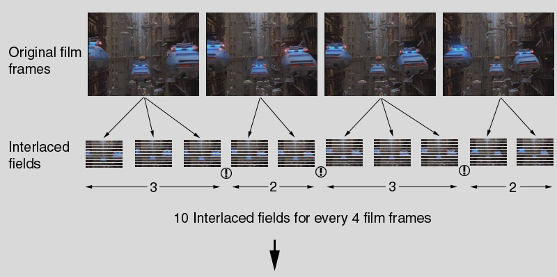
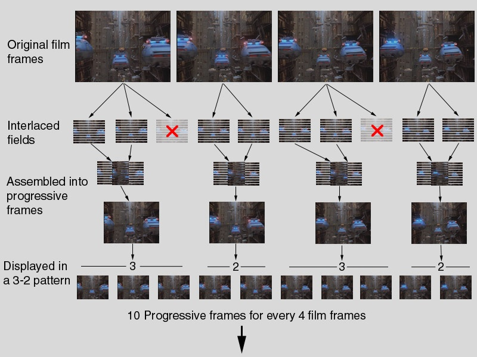
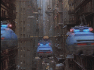
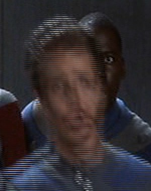
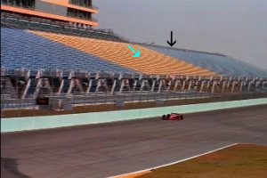
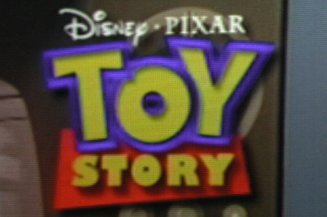

视频后处理技术deinterlace
转自：http://blog.sina.com.cn/s/blog_9b82725901016x0h.html
一个动态影像是由一连串连续的静态影像所组成的，其中每一个静态影像称为帧（frame），而动态影像中每秒所包含静态影像的数量则称为帧（速）率（frame per second, fps）。
而在显示器上显示动态影像的方式有两种：
- 渐进扫描：或称为逐行扫描。将每一帧从左至右、由上至下，逐一的将所有的画素显示出来。
- 交错扫描：或称为隔行扫描。将一帧图像的奇数行画素及偶数行画素分开，分成为两个场（field）。轮流扫描奇数行所构成的场及偶数行所构成的场。
因为一个场只有一个帧一半的资讯，因此在装置处理速度无法即时的处理整个帧的资讯以及传输带宽不够即时传输整个帧的情形下，使用交错扫描可以节省一半的资讯量且可以为持相同的更新率。在以往阴极射线管显示器（Cathode Ray Tube, CRT）很难一次扫描整个屏幕，因此无法使用渐进扫描。但是因为屏幕上萤光的余晖加上视觉暂留效应，使得交错扫描在阴极射线管显示器上运作的相当顺利。所以广播电视系统例如NTSC每秒59.94场，PAL则为每秒50场。
现在新式的显示设备的速度已经够快可以即时的处理且扫描整个帧，因此都是使用渐进扫描。但是在这些新型的显示设备上直接播放交错式影像会产生严重的闪烁现象，且因为交错式讯号两行只有一行有影像另一行则是全黑的，所以亮度看起来会减少一半。由于有上述这些问题，所有使用渐进扫描的新式显示设备都需要有去交错的功能。
去交错分为以下两类
拍摄交错式影像的摄影机：一般数位摄影机由于硬件速度及缓冲内存大小的限制，没办法连续的拍摄渐进式的影像，因此一般数位摄影机都是拍摄交错式影像，由于交错式影像比渐进式影像少了一半的资讯量，因此可以降低硬件速度及缓冲内存大小的需求接近一半。但是每个字段被拍摄的时间并不一样，代表我们永远没办法完美的去交错。例如有一台每秒拍摄六十个字段的数位摄影机，第一个字段是在1/60秒被拍摄的，而第二个字段是在2/60秒被拍摄的，我们将两个字段结合在一起，若是被拍摄的物体没有任何移动，那么结合出来的影像看起来是很完美的；但是如果被拍摄的物体有移动，两个字段的内容会有相当的不同，那么结合出来的影像会产生一种“锯齿”的效果。
去交错方法
以下转自：https://en.wikipedia.org/wiki/Video_post-processing
The term post-processing (or postproc for short) is used in the video/film business for quality-improvement image processing (specifically digital image processing) methods used in video playback devices, (such as stand-alone DVD-Video players), and video players software and transcoding software. It is also commonly used in real-time 3D rendering (such as in video games) to add additional effects.
Uses in video production[edit]
Video post-processing is the process of changing the perceived quality of a video on playback (done after the decoding process). Image scaling routines such aslinear interpolation, bilinear interpolation, or cubic interpolation can for example be performed when increasing the size of images, this involves eithersubsampling (reducing or shrinking an image) or zooming (enlarging an image). This helps reduce or hide image artifacts and flaws in the original film material. It is important to understand that post-processing always involves a trade-off between speed, smoothness and sharpness.
- Image scaling and multivariate interpolation:
- SPP (Statistical-Post-Processing)
- Deblocking
- Deringing
- Sharpen / Unsharpen (often referred to as "soften")
- Requantization
- Luminance alterations
- Blurring / Denoising
- Deinterlacing
- weave deinterlace method
- bob deinterlace method
- linear deinterlace method
- yadif deinterlace method
- Deflicking
- 2:3 pull-down / ivtc (inverse telecine) for conversion from 24 frames/s and 23.976 frames/s to 30 frames/s and 29.97 frames/s
- 3:2 pull-up (telecine conversion) for conversion from 30 frames/s and 29.97 frames/s to 24 frames/s and 23.976 frames/s
-------------------------------------------------------------------------------------------------------------------------------------------------------------------------
以下转自：http://blog.csdn.net/baymoon/article/details/1404067
Introduction
(The results of all our Benchmark Tests are located HERE.)
It has long been our feeling that one can learn much more about the quality of a DVD player by watching lousy DVD movie material than you can learn by watching great material. Great material tends to look fine on just about every player, and we find ourselves squinting and striving to tease out the tiny differences in sharpness and resolution. But, as you will see from this article, there are really substantial differences in how well players handle badly encoded DVDs. There are plenty of DVD player reviews that will tell you how terrific a player looks when playing The Fifth Element or Starship Troopers, but really, that’s like testing a car by only driving it on a perfectly smooth, level road. We’re here to change all that. We’re going off-road and showing you how well these players handle the rocks and potholes. This article is all about problems you might encounter with progressive DVD players, when you will encounter them, and what those problems look like. We took most of the currently available mass-market progressive DVD players, and a few expensive boutique players, along with some PC DVD software, and tested them with the most difficult DVDs we could find. Few players came through the gauntlet unscathed.
It almost goes without saying that all of these players will deliver a very nice image when fed good material (with a few exceptions, which we’ll cover later). There are differences between the players’ basic image quality, but for the most part, you’re going to notice very minor video quality differences when the players are firing on all cylinders. When the players are dealing with a crummy DVD, though, that’s when things get interesting.
Many people wonder how important these hiccups and glitches really are, and why we spend so much time and energy testing for them. This is a difficult issue, and depending on how you ask the question, you can get several different answers. When we first wrote about progressive scan players, we said that, "Probably 90%, maybe 95%, of major Hollywood releases are going to play back basically fine on most of these players." Note all the caveats -probably 90%, major Hollywood releases, basically fine, most...players. That represented our best guess as to how often these glitches intruded, based on our experiences watching a lot of movies. Since then, we've done a lot more research and discovered that nearly all movies have at least some glitches. Sometimes the glitches are very minor, and will trip up only a few DVD players, and then only for a couple of frames. Sometimes they last longer, and extensive sections will be messed up on many DVD players. Sometimes a section has glitches, but is not a particularly revealing scene for deinterlacing problems, so most viewers will never notice that their player isn't giving them the correct picture. Other times the scene is messed up in really obvious ways.
The biggest problem is that most people don't know that it's the DVD player. People assume their DVD player "just works" and thus when they see a deinterlacing glitch or other problem, they are most likely to assume it's just the DVD transfer (the movie disc). Without a reference to compare with, the consumer has no way of knowing if the image is messed up because of the people at the encoding company, or because their player actually doesn't "just work." In other cases, the user doesn't know that the player isn't doing a good job because there are no obvious glitches. Many current progressive players fall back into a very watchable but very soft video mode when they aren't sure whether the source is film or not. In the worst case, the entire film will look excessively soft, which means they're getting exactly no benefit at all from their progressive player. They're being sold a bill of goods, because their player isn't delivering the crisp film image they were promised.
We think the user should demand a player that "just works fine," and that is what our tests revolve around. We think you should be able to just drop in a disc and get a great, crisp, full-resolution image. It shouldn't matter whether the encoding software on the front end is buggy, or the disc manufacturer cut corners, or whether the original material was shot on film or NTSC video or HD progressive video, or some kind of film/video/computer hybrid. The player should just work. If you think that standard is not worth working towards, you're reading the wrong article.
To answer the original question about how important these tests are, we think that our deinterlacing tests are relevant to everyone - including studios, manufacturers, and consumers - no matter what movies you watch. If you care about getting the best picture all the time, not just when the disc is mastered perfectly, then you should care about these tests. And if you watch any low-budget films, animation, documentaries, TV shows on DVD, concerts, or kid's videos, you should care about these tests a lot.
We also want to warn you: if you have a progressive-scan DVD player that you are happy with, you probably should not read this report. With some of these artifacts, you are much better off not knowing they are there, because once you start to notice them, they’ll drive you nuts, and then you will inevitably want to replace your player. We’re quite serious here – it’s happened to us. Once someone points out a flaw in your player, it’s very difficult to ignore it. If you don’t have a progressive player, and are thinking about getting one, then this report is for you. Or if you have a progressive player, and are seeing artifacts that are bothering you, and you want to find out more about those artifacts, or find a player that doesn’t have them, then again, this is a report you will want to read. But the rest of you: don’t blame us if reading this article ruins your enjoyment of your expensive DVD player. We warned you. We are calling them as we see them. If you want a review that will tell you, "Oh yes, this is a reference quality player," for most players, there are plenty of A/V magazines out there to do that for you. We won't be doing that here.
Before we begin, Brian Florian will explain how film is transferred to video.
|
To better understand the upcoming concepts on Progressive Scan DVD Players, one must first be armed with some basic knowledge of how the NTSC television system works, how film gets transposed to it, and how all that relates to the newer progressive scan television displays. The following information is not intended to be a definitive paper on the subject, but should serve as a good introduction for all. The visuals and animations presented here, though large in file size, are key and will reward repeat viewing. Motion pictures are comprised not of motion at all, but numerous stills shown in rapid succession. For the films we all watch at the theater, 24 frames are shown in one second (24 frames per second, or 24fps). The NTSC television system generates its visuals in a very different fashion . . . Interlaced NTSC TV Televisions create their image by drawing (scanning) lines of light on the CRT face, left to right, top to bottom, to produce a picture over the entire screen. The resultant images that make up the motion picture are comprised of alternating interlaced fields: that is, one field consists of all the odd lines (1,3,5 etc. through 525), and the other consists of all the even lines (2,4,6 etc. through 524). The result is that only half of the video's display is drawn every 60th of a second. A simulation of this is shown on the left. Field 1 is scanned, and then Field 2 is scanned. Traditional talk quotes NTSC television as having 30 frames per second, each being comprised of two interlaced fields. That isincorrect and should be erased from your mind. The NTSC interlaced system shows 60 unique images (fields) per second, and each field is an independent snapshot in time. So we don't want to think of interlaced televisions in terms of frames but rather in terms of fields, interlaced fields, and 60 of them per second. As long as nothing in the picture changes (such as when showing a still image), the alternating fields will actually complement each other and form a complete picture. The display will flicker and scan lines will be visible (both a inherent of an interlaced system), but that's life in an interlaced world. We don't spend the evening looking at a still picture on the TV though. The moment something moves, we get interlacing artifacts! 'Combing' (also referred to as 'feathering') and 'line twitter' are possibly the two most dramatic interlace artifacts. Remember we said each field is a unique snapshot in time. That is key! When there is motion, the subject will be in one position for one field, and in another position for the next. The alternating fields no longer complement each other and we have a bit of a mess. The animation on the right shows an example of an interlaced display trying to show a tomato moving from left to right. Each field shows the tomato a little farther to the right than the previous. Because the fields are interlaced, jagged vertical edges can't help but exist, except during for the last two fields (5 and 6) where the tomato is stationary (and being that the subject is stationary, the fields complement each other). The further back you are from an interlaced display (or the smaller the display is), the less this and other artifacts are noticed. If you want to see the effect in real life, get yourself a little too close to an interlaced TV. Focus in on an object's edge that is stationary and wait for it to move. Ouch! At left is an interlaced image of a skier. Not only is the flicker of the rapidly alternating fields annoying, but have a good look at the ski-pole: It comes and goes because it’s so fine it can only be found in one of the two interlaced fields. This is line twitter. This artifact exists when a piece of detail is less than 2 scan lines high. Although exacerbated during vertical movement, this artifact can exist in a still image (as demonstrated by our little animation). For this reason, fine detail is often filtered from the signal before being encoded for DVD to minimize such twitter when played back at home on your interlaced display device. Because of this, we have yet to experience the full vertical resolution possible with DVD. The preceding basic knowledge of interlacing is necessary to understand the transfer of film to video. NTSC Telecine (Transfer of 24fps Film to 60Hz NTSC TV) Motion picture photography is based on 24 frames per second. Time to call to mind all that math you learned in school and realize that 24 doesn't go into 60 very easily. To boil it down a little, our challenge is to make 4 frames from the film fit as evenly as possible across 10 video fields. We can't just double up the fields on every fourth film frame or we'd get a real 'stuttered' look. Instead, a telecine process is used known as 3-2 pulldown to create 10 video fields from 4 film frames. This form of telecine alternates between creating 3 fields from a film frame and 2 fields from a film frame. Hence the name 3-2. Consider now our flow chart of the 3-2 pulldown performed on four frames of this movie scene:  Pretty cool right? It is and it isn't. 3-2 pulldown inherits much of the artifacts we described when talking about interlaced video. While fields sourced from a given film frame do complement each other, anytime a field follows one made from a different film frame (noted above by the "!" icon), we have the same potential for interlace artifacts as the two fields, sourced from different film frames, interlaced on screen. Even our little animated synthesis of the final interlaced product, which actually contains 10 interlaced pieces, shows evidence of such artifacts as the flying police cars move ahead. Such is life. As long as you are watching your movies on an ordinary interlaced display, there is not much more to tell you. What you see at home is pretty much what we've shown as the interlaced content in the above illustration. Progressive Scan Progressive displays, such as high-performance CRT/LCD/DLP/LCOS projectors and the new HDTV-ready TVs, can show progressive scanned images as opposed to interlaced. We learned above that an interlaced display shows 60 fields per second. But with progressive, each scan of the CRT face is a complete picture including all scan lines, top to bottom, now called a frame, and we are showing 60 of those per second. The benefits of a progressive display are no flicker, scan lines are much less visible (permitting closer seating to the display), and they have none of the artifacts we described for the interlaced display (as long as they are fed a real progressive signal). But sources which are truly progressive in nature are hard to come by right now. Movies on DVD are decoded by the player as interlaced fields. All of the film's original frames are there, but they are just divided into "halves". What we're going to talk about next is how we take the interlaced content of DVD and recreate the full film frames so we can display them progressively. The term commonly used to restore the progressive image is deinterlacing, though we think it is more correct to call it re-interleaving, which is a subset of deinterlacing. Re-Interleaving 24fps Film Deinterlacing involves assembling pairs of interlaced fields into one progressive frame, and showing it in a manner which will emulate the original 24fps speed. For every film frame that had three fields made from it, the third field is a duplicate of the first, and (if the MPEG-2 encoder is behaving properly) won't even be stored on the DVD. The progressive output of a DVD player should assemble 2 fields from each film frame and create a complete progressive frame that looks just like the original film frame. You should now be thinking that the DVD will once again have 24 frames to show in one second . . . but as we said the progressive display is operating at 60 frames per second. In order to space the film frames out, the DVD player alternates between doubling and tripling each frame (1, 1, 1, 2, 2, 3, 3, 3, 4, 4). Looks like that same 3-2 pattern again. It is!   This form of display gives us a moving image very close to the original film. It has a tendency to "judder" a bit though, as the frames alternate between being shown for 1/20th of a second and 1/30th of a second. Even our little synthesis of the final product, which actually contains 10 pieces, shows this judder. In the future, both the player and the display could increase their display rate above 60 fields per second, to 72 per second. At that point, the fields would only last 1/72 of a second, permitting the player to show every film frame three times (24 x 3 = 72), eliminating the motion judder. 72 fps will only work with film based sources though, as it is a multiple of 24. It will not work well with video sources which are 60 field per second. What we need are TVs which, like our computer monitors, can operate at a variety of frequencies, adapting to different sources, but that’s a subject for another day. Deinterlacing Other Sources The deinterlacing process we've just covered is specific to 24fps film material which is MPEG-2 decoded (as interlaced fields). It's really a matter of putting the right fields together, so it's fairly simple. Deinterlacing native NTSC interlaced video material is much more complicated. In such video material, each field represents a unique snapshot in time, and in order for it to be deinterlaced at an acceptable level, it requires getting into motion-adaptive and motion-compensation algorithms to overcome the inherent problems of the interlaced material. There is no best method. We've talked about 60 fields per second video, 24 frames per second film, and how the two relate. There is another type of source signal: True 30 frame per second material. Film is a very flexible medium. Cameras can be run at virtually any speed, yielding all sorts of effects. The flowing silhouettes of a James Bond title sequence are shot at 120fps. When slowed to the standard 24fps playback speed, we get that smooth, organic motion. Did anyone ever explore playback speeds beyond 24fps for feature films? Yes. In 1955 the Todd-AO 70mm film system hit the world. Designed to provide the wide panoramic effect of Cinerama using only one strip of film (Cinerama used 3 in tandem), it used a 65mm negative with a 12.7mm bubble lens whose field of vision was 1280 wide. More to the point, it was conceived as a 30fps format. The first major film shot in Todd-AO was Oklahoma!. The Oklahoma! DVD features a transfer from the 30fps Todd-AO print. Like all DVD material, it is decoded as interlaced fields, but unlike video, pairs of fields do belong together if you want to recreate the original film frames. Now we've got another type of deinterlacing: 2-2 pulldown where pairs of fields need to be woven together and each displayed twice (2-2-2-2 as oppose to 3-2-3-2). 30fps movie did not actually catch on though. For the sake of general release, they also shot Oklahoma! in 24fps Cinemascope on 35mm stock. Contrary to popular opinion, they very rarely shot together due to simple logistics and differences in lenses. The two versions of the film, resolutions and frame rate aside, are NOT identical pictures (i.e., not the same performances of actors). Very few Todd-AO films were shot at 30fps. The system was converted to the standard 24fps which is what such Todd-AO pictures as The Sound of Music were filmed and displayed at. Enough film history. Before you start to think we are concerned about 2-2 pulldown for the sake of a couple classic films, there is another source of true 30 frames per second material which is more common than you might think: The proverbial sit-com such as NBC's Friends. These shows are shot with film at 30frames/ps and transferred to 60fields/ps video to give them a softer film like look. In consequence, there is a lot of vertical resolution waiting to be reclaimed through 2-2 playback. (Note: NTSC does not really run at 60 Hz; it is technically 59.94 Hz. The industry rounds it up to make it easier to read.) - Brian Florian - |
Why Are Progressive Players Better?
With all the hype flying around about progressive DVD players, many people have assumed that when they get their new progressive player home and plug it in, the difference will smack them in the face and it will be like watching a whole new film. We’re here to tell you that’s not so. If you don’t know what to look for, the difference between interlaced and progressive can be quite subtle. Not to say that there’s no improvement, but it’s not the kind of improvement that will knock most viewers off their feet. Once you understand the improvements, though, and know what to look for, we think most people will be hooked, and will no longer want to watch their DVDs in interlaced form.
The magnitude of the change you will see also depends on what you were watching before. If you switch from a regular interlaced TV to a progressive-scanned 480p picture, you should see a much smoother, more film-like picture, with much less obvious scan line structure, and more apparent vertical resolution. The difference should, in fact, be pretty obvious. But if, like most new high-end TVs, your TV has a built in deinterlacer (often called a “line doubler”), then the television has been converting your interlaced signal to 480p already, so the smoothness and lack of line structure are already there. So what can a progressive DVD player offer? Better deinterlacing, to start with. In other words, the deinterlacer in the DVD player is likely better than the one in your TV (the DVD player's deinterlacer also performs the deinterlacing in the digital domain right off the disc, rather than sending an analog video signal to the TV, which has to convert it back to digital for deinterlacing).
Until fairly recently, progressive-capable televisions tended to have relatively inexpensive and mediocre deinterlacing chips that had no film mode (no 3:2 pulldown detection), or a film mode that didn't work very well. But nearly all progressive DVD players, certainly almost all the ones we review here, have a deinterlacer with a film mode. However, as deinterlacing technology has gotten better and cheaper, film-mode deinterlacers have been integrated more and more into high-end televisions. At this point, essentially all the major manufacturers make HDTVs with a working film-mode deinterlacer.
Why is a film mode deinterlacer so good? Because when it correctly detects film sources, it can recreate the original film frame with no compromises at all. The result is that when watching film-originated DVDs, you will get far less line twitter on thin horizontal and near-horizontal lines, you will keep full resolution on camera pans and zooms, and you will see less noise on high-detail areas. To see this effect, look at thin lines in the background, especially on slow camera movement. Look at high-detail areas of the picture, like trees and bushes, again especially on slow camera moves. Once you see how sharp and clear those areas look with good film-mode deinterlacing, you won’t want to go back.
If you don’t really see any difference, then perhaps your TV has a better deinterlacer than most, and includes a film mode. Then you will see very subtle differences, perhaps no difference at all, switching between progressive and interlaced output on your DVD player. The deinterlacer in the TV may be pretty good, perhaps just as good as the one in the DVD player.
So why bother with a progressive player if your TV has a film-mode deinterlacer? First off, as we said, the deinterlacers in DVD players tend to be somewhat better than the ones in TVs. When we compare the deinterlacing in a mass-market DVD player to the deinterlacing in a TV from the same company, usually the DVD player wins. The ones in DVD players tend to stay in film mode more consistently, drop to video mode less often, and handle bad edits more cleanly. Obviously there are exceptions. For example, in our second shootout, we tested a Pioneer Elite HDTV and found that it had better deinterlacing than any of their (Pioneer's) players.
Even in cases where the TV has a better deinterlacer than the player, though, the progressive player has an advantage: better resolution. When the television deinterlaces the analog signal, it first has to digitize the signal (A/D), send it through a deinterlacing chip, and convert it back to analog to feed to the CRTs. That process inevitably loses some resolution. It might not be much. You might feel like you can live with it. But it would be a good idea to get a copy of the Avia DVD and look at the resolution pattern on it to see exactly how much you are losing. About 5 TVL (TV Lines) of loss is good performance, 10 is average, and 15 or more is bad. With the progressive DVD player, you should be able to get all 540 TVL. But if your TV has a good film-mode deinterlacer, and you feel like you can live with the resolution loss, then you might be able to save money by keeping your existing interlaced player.
But honestly, given that the best DVD players these days are all progressive, and excellent progressive players can be had for around $200, there's not much reason to avoid progressive DVD. Even if your TV has excellent deinterlacing, it's not going to hurt anything to plug in a progressive DVD player, and you should get a cleaner picture because of the simpler signal path. However, we certainly don't recommend just any progressive DVD player. As you'll see from this article and our deinterlacing shootouts, there is a wide variance in quality among players, and if you hook up a low-quality player to a good HDTV, you could take a big step down in quality.
(A side note about TVs: Usually, TVs with film mode are advertised as having "3:2 pulldown," which makes no sense. What they mean is that the TV can detect the characteristic 3-2 pulldown signature of film and reverse it, producing a high-quality image from film-based sources. Just remember that if you see the phrase "3:2 pulldown" on a spec sheet for a TV, it means “3-2 pulldown detection”, which really means "film mode.")
What Isn't Better About Progressive Players?
Sometimes you see folks commenting on the improved blacks and color saturation of their progressive players. This is a mirage. Progressive players are not supposed to improve black level or color saturation. The reason they may look different is that the standard black level on a progressive player is different from the standard black level on an interlaced player, for technical reasons having to do with conflicting TV standards. And when black levels go down, the saturation of colors on the screen inevitably goes up, because white is being removed from the color. Once you calibrate your display with Avia or Video Essentials, the color, contrast, and black level should look exactly the same with interlaced vs. progressive. The only advantage of a progressive DVD player is in the lack of interlace artifacts. Of course, if your progressive DVD player is a lot better than your old interlaced player, it may look better for a variety of reasons. But it still shouldn’t change your black level or color saturation.
It's important to keep in mind that most DVD players don't conform exactly to the standards for output voltage. And just as louder audio sounds better, brighter players (ones with higher voltage outputs) will tend to look better, with more "punch." Unfortunately, brighter players also crush the white levels on bright scenes, which is bad. So anytime you compare two DVD players, whether progressive or not, you should create two memories on your display, one for one player and one for the other. Calibrate each memory separately with a good calibration disc like Avia, Video Essentials, or the Sound & Vision Home Theater Tune-up (but not THX Optimode, because it's not accurate). At this point, you should get identical color, hue, brightness, and contrast, and can concentrate on other aspects of the picture. If your display doesn't have multiple picture memories, then our advice is to ignore color, hue, brightness, and contrast, because it will look the same once the display is calibrated to whichever player you finally choose. The same applies if you are trying to compare the progressive output and the interlaced output of the same player. If the color or brightness changes, that's not unusual, and is a calibration issue. Ignore it, or set up two memories so you can calibrate the differences away.
How Progressive Players Work
How The Information is Stored on Disc
It’s important to understand at the outset that DVDs are designed for interlaced displays. There’s a persistent myth that DVDs are inherently progressive, and all a DVD player needs to do to display a progressive signal is to grab the progressive frames off the disc and show them. This is not exactly true. First of all, a significant amount of DVD content was never progressive to begin with. Anything shot with a typical video camera, which includes many concerts, most supplementary documentaries, and many TV shows, is inherently interlaced. (Some consumer digital video cameras can shoot in progressive mode, and a handful of TV programs are shot in progressive, particularly sports events.) By comparison, content that was originally shot on film, or with a progressive TV camera, or created in a computer, is progressive from the get-go. But even for such content, there is no requirement that it be stored on the DVD progressively.
DVDs are based on MPEG-2 encoding, which allows for either progressive or interlaced sequences. However, very few discs use progressive sequences, because the players are specifically designed for interlaced output. Interestingly, while the sequences (i.e., the films and videos) are seldom stored progressive, there's nothing wrong with using individual progressive frames in an interlaced sequence. This may sound like a semantic distinction, but it’s not. If the sequence is progressive, then all sorts of rules kick into place which ensure that the material stays progressive from start to finish. Whereas if the sequence is interlaced, then there are fewer rules and no requirement to use progressive frames. The encoder can mix and match interlaced fields and progressive frames as long as each second of MPEG-2 data contains 60 fields, no more, no less (or 50 fields per second for PAL discs). The progressive frames, when they are used, are purely for compression efficiency, but the video is still interlaced as far as the MPEG decoder is concerned.
The input to a DVD encoder (the instrumentation that is used to author a DVD) is almost always an interlaced digital master tape, even if the original material was shot on film. The video transfer is typically done at a different facility, and the output of the transfer is interlaced. Since the DVD encoding software doesn't even have access to a progressive master, it must rely on the same kinds of algorithms that a deinterlacer uses to put the proper fields together. Since there is essentially no requirement that it actually always put the proper fields together, other than compression efficiency, many encoders are conservative about using progressive frames. If the encoder cannot be sure that a frame is progressive, it will typically mark it interlaced, because the only real loss is a few bits of disc space.
When the mastering engineers view the disc for quality control, they view it on an interlaced monitor. They don't necessarily care how well it deinterlaces, because that's not part of the DVD spec. Some mastering houses do pay attention to the flags produced by their encoder, and some do view the disc on progressive players just for quality control, but that's not at all required.
In short, the content on a DVD is interlaced conceptually, and is stored in interlaced sequences. Frames can be marked "progressive" to help compression, but are not always marked that way, even when it would be correct to do so. In interlaced sequences, the encoder can either keep the fields separate, or combine them together into one frame, whichever is best for compression purposes. There is a flag on each image stored in the MPEG-2 stream called “picture_structure” that can be either “frame” for a full 720x480 pixel frame, or “top field” or “bottom field” for a single 720x240 field. (We’ll learn about top and bottom fields later.) And it is allowed, but again not required, to set a flag called “progressive_frame” as a hint to the decoder that the fields in that frame were taken from the same frame of film. This allows for better pause and slow motion modes, and better down-conversion of 16x9 images for 4x3 displays. But this is again, purely optional. The content will play fine whether the data is structured as fields or frames, and whether the flag is present or not.
In fact, the encoder is allowed to combine fields that are not from the same film frame together, as often that produces better compression, even for inherently interlaced video. In such cases, the encoder is not supposed to set the progressive_frame flag, but again, if it does happen to get set, it will make no difference for normal playback on an interlaced display. And since interlaced displays are the only thing DVD was designed for, sloppiness with flags is more common than you’d think.
The flags on the disc, and the structure of the frames, are purely hints. Interlaced video can be stored on the disc as frames, and progressive frames can be broken into fields. The progressive_frame flag can be there or not. It doesn’t make any difference for interlaced playback. As we will see, though, it can make a big difference for progressive playback.
3-2 Pulldown
As we explained above, when film is transferred to video, 24 frames per second of film must be converted to 60 fields per second of video. The way this is accomplished is to show the first frame of film for 3 fields, then show the second frame of film for 2 fields, then the third frame of film for 3 fields, and so forth. This sequence, or “cadence” of 3, 2, 3, 2, 3, 2 is what is called 3-2 pulldown. Sometimes this is written as 3/2 or 3:2, but this looks like a ratio, so we and most other video technicians prefer it written as “3-2” or "2-3." Both are correct, but we'll use the more popular "3-2." When a player or TV can detect the 3-2 pulldown encoding, this is called 3-2 pulldown detection, even though the advertisement for the TV might say that it has "3:2 Pulldown".
There are two extra flags available in MPEG-2 to make it easier to create a disc that has 3-2 pulldown. These two flags are called “repeat_first_field” and “top_field_first.” A frame in the MPEG stream can have “repeat_first_field” set to “true,” and that tells the decoder to generate 3 fields from this frame, rather than 2. The decoder plays the first field, then the second field, then the first field again, thereby making the 3-field section of the 3-2 pulldown cadence. The next frame would generally have “repeat_first_field” set to “false,” so the decoder will generate 2 fields. Because fields have to alternate between even (bottom) and odd (top), the “top_field_first” flag tells the encoder which of the two fields in the frame should be sent out first. The “top” field is the odd numbered scan lines: 1, 3, 5…, while the “bottom” field is the even numbered scan lines: 2, 4, 6… If the top field is first on a 3-field frame, the decoder will output top, bottom, top. The next field needs to be a bottom field, so the next frame will have top_field_first set to “false.”
Again, it’s important to note that there is no requirement to follow this 3-2 sequence. The DVD decoder doesn’t care. It just follows the flags as written on the disc. As long as there are 60 fields in each second of video, everything is fine.
Here are some examples of what legal flag sequences look like. Imagine that we have a sequence of 4 film frames that we want to convert to video and store as an MPEG-2 stream.. We need to turn those 4 frames into 10 fields (3 + 2 + 3 + 2).
First, the most common way, using 4 MPEG pictures and all the flags:
| MPEG Picture | Film Frame | Picture_Structure | Progressive_Frame | Repeat_First_Field | Top_Field_First |
| 1 | 1 | Frame | True | True | True |
| 2 | 2 | Frame | True | False | False |
| 3 | 3 | Frame | True | True | False |
| 4 | 4 | Frame | True | False | True |
However, it would be perfectly acceptable to encode that same sequence of film like this, using 10 MPEG pictures:
| MPEG Picture | Film Frame | Picture_Structure | Progressive_Frame | Repeat_First_Field | Top_Field_First |
| 1 | 1 | Top Field | False | False | False |
| 2 | 1 | Bottom Field | False | False | False |
| 3 | 1 | Top Field | False | False | False |
| 4 | 2 | Bottom Field | False | False | False |
| 5 | 2 | Top Field | False | False | False |
| 6 | 3 | Bottom Field | False | False | False |
| 7 | 3 | Top Field | False | False | False |
| 8 | 3 | Bottom Field | False | False | False |
| 9 | 4 | Top Field | False | False | False |
| 10 | 4 | Bottom Field | False | False | False |
Or like this, using 5 MPEG pictures (note that MPEG pictures 2 and 3 contain fields from two different film frames):
| MPEG Picture | Film Frame | Picture_Structure | Progressive_Frame | Repeat_First_Field | Top_Field_First |
| 1 | 1 | Frame | False | False | True |
| 2 | 1 & 2 | Frame | False | False | True |
| 3 | 2 & 3 | Frame | False | False | True |
| 4 | 3 | Frame | False | False | True |
| 5 | 4 | Frame | False | False | True |
These are all real examples, actually used on real DVDs. Example number 3 is extremely common, especially on smaller releases, and even on trailers and supplements on major releases. And there are dozens of other legal variations. In each case, exactly the same sequence of fields will be produced at the decoder output, even though the flags and the number of pictures actually stored on the disc will be different. The compression factor will be best with the first variation, which is the only reason it’s the most popular. (It’s certainly not for the purpose of making progressive DVD players work better.)
We should also mention that there is a decent amount of material encoded with 2-2 pulldown, which has a different flag pattern, and is even more likely to not be marked with the "progressive-frame" flag. In Europe almost every film is encoded with 2-2 pulldown. Their TVs run at 50 fields per second, so the easiest way to encode a 24 fps film is to speed it up slightly to 25 fps and show each frame for 2 fields. Even in the US, there are some discs that use 2-2 pulldown, including a handful of Todd-AO films shot on 30 fps cameras, like Oklahoma! and Around the World in 80 Days. Several TV shows, including Friends, are shot on 30 fps cameras and transferred to video using 2-2 pulldown. Unfortunately, the Friends DVDs are not marked progressive, which just reinforces our point – you can’t trust the flags.
Why Deinterlacing is Necessary
A common question we get asked is, "Why can't the DVD player just take the progressive frames off the disc and send them out without ever converting them to interlaced in the first place?" The reason, in a nutshell, is that there are too many examples of discs where some or all of the frames are not stored progressively. Even if the original material was sourced from film, there is no requirement at all that the frames be stored like Example 1, above. It's relatively common for films to be dumped onto the disc using an encoding similar to Example 3. As mentioned before, most major Hollywood releases look more like the first example, but it's just that they have better encoding software, which recognizes the 3-2 pattern and removes the extra repeated fields for compression efficiency. It's not done to improve progressive playback; that just happens to be a useful side-effect.
And, of course, there's plenty of material on DVD that was originally shot on video, or was shot on film, converted to video, and then edited on video. This material requires fairly sophisticated video-mode deinterlacing algorithms if it's going to look good. Cheaper deinterlacing chips skimp in this area.
Film-Mode Deinterlacing
To display a perfect progressive image from a film-sourced DVD, the player needs to figure out which fields in the MPEG stream go together to make each film frame. In theory, the progressive_frame flag should tell the player that the frames on the disc were originally from a film, and will go together, but as we’ve mentioned, that flag is not always optimized for progressive scan playback.
So what the best players do is use a standard MPEG-2 decoder to generate digital interlaced video and then feed that video to a deinterlacing chip. The chip makes decisions constantly about whether the video was originally from film by looking for repeated fields. In the standard 3-2 cadence, the 1st and 3rd fields are identical. If the deinterlacing chip sees a constant stream of 5-field sequences in which the 1st and 3rd fields are identical, it switches to film-mode deinterlacing.
Once it’s in film mode, the deinterlacer just combines fields 1 and 2 to make one progressive image, outputs that for 3 progressive frames, then combines fields 4 and 5 to make another progressive image, and outputs that for two frames. Then it repeats the process with the next 5 fields. The player is still outputting frames in a 3-2 pattern, but it’s creating 60 full progressive frames per second instead of 60 fields per second. Once the chip is in film mode, the deinterlacing algorithm is incredibly simple, and the complete film frame is recreated without loss or compromise. Film mode is the one area of deinterlacing that can be objectively perfect.
If the film is encoded with a 2-2 pattern, the job gets much harder. There are no repeated fields as there are with a 3-2 pattern, so much more sophisticated analysis is used. This is one case where good flags would be a huge help to deinterlacing. Sadly, the flags are just not correct often enough, and 2-2 material is much more often flagged badly than 3-2 material, for reasons we don't completely understand.
The most common, and most distracting, artifact one encounters in film mode happens when the deinterlacer blithely combines together two fields that weren't meant to go together, usually because the 3-2 sequence is interrupted and the deinterlacer doesn't adapt quickly enough. When this happens, the odd numbered lines of the image are from one moment in time, and the even numbered lines are from a different moment. If something in the image is moving, it looks like there are spiky lines sticking out from the sides of the object like the tines of a comb. Hence the effect is usually called combing, though it is also sometimes referred to as feathering.
Video-Mode Deinterlacing
Sometimes, the cadence doesn’t stay regular. For various reasons (detailed later), the 3-2 cadence may break from time to time, or perhaps the video was never sourced originally from film. Documentaries, concerts, and made-for-TV material often is shot on video cameras, and then there is no good way to create perfect progressive frames. Video cameras capture 60 separate fields (one field has half the scanning lines of the display) per second, and each one is separated in time, so moving objects are in a different position in each field.
In any case, if the deinterlacer doesn’t see a 3-2 film cadence, it must switch to video-mode deinterlacing. Here the algorithms get much tougher, and perfect results are just not possible, only different sorts of compromises that look subjectively better or worse. There are two very simple techniques, neither of which is very good, and a host of progressively more complex algorithms. We’ll divide them into five large categories, roughly in order of complexity:
Single-Field Interpolation (or “Bob”)
This just involves taking each field and scaling it to a full frame. The missing lines between each of the scan lines in the field are filled in with interpolated data from the lines above and below. Done badly, the screen looks blocky and pixellated. Even done well, the image looks very soft, as image resolution is unavoidably lost. In addition, thin horizontal lines will tend to “twitter” as the camera moves. These thin lines will fall on just one field of the frame, so they will appear and disappear as the player alternates between the odd fields and even fields. This is the most basic deinterlacing algorithm, and the one that almost every deinterlacer falls back on when nothing else will work.
Field Combining (or “Weave”)
In this technique, each pair of two consecutive fields is merged together to form a frame. This generally only works well if there is very little or no movement between the two fields, such as is the case with a single frame of film. If there is movement between fields, the image will have combing, which is very distracting. Hence very few deinterlacers use this as a primary algorithm.
Vertical Filtering
This is a technique used by most software PC DVD players, as well as many of the single-chip MPEG decoder/deinterlacer combos like Cirrus Logic, LSI, and Mediamatics. Because software decoders generally don’t have enough horsepower to do motion-adaptive deinterlacing and MPEG-2 decoding at the same time, the players use shortcut techniques to get reasonable-looking results. Most commonly, they weave together pairs of fields that are stored together as MPEG frames, and soften the image slightly in the vertical direction so any combs that result will look more like double images than combs.This causes loss of vertical resolution and bizarre-looking jitter on movement and pans. Once you notice it, it can become difficult to watch. Static areas of the image also look much softer than they need to, and the overall effect is watchable, but not great.
Motion-Adaptive Deinterlacing
This is a whole class of algorithms that attempt to switch between different ways of deinterlacing depending on whether an area of the screen appears to be still or moving. If an area is still, the algorithm uses the image data from two fields and weaves them together, but for moving areas, the algorithm just interpolates (bobs) the current field. This preserves resolution on the still sections of the screen, where the viewer is most likely to notice it, and reduces combing on the moving sections of the screen, at the expense of resolution. Done well, this looks very good. Most good deinterlacers use some form of motion-adaptive algorithm.
A distinction should be made between "per-pixel" motion-adaptive deinterlacing, which makes decisions for every pixel on screen, and "per-field" motion-adaptive deinterlacing, which just changes the algorithm for the whole screen based on the amount of motion in the frame. The first one is difficult, and when done well looks quite good. The second is not much more difficult than simple vertical filtering, and in practice rarely looks any better.
Motion-Compensated (Motion Vector Steered) Deinterlacing
This is something one generally only finds on very, very expensive deinterlacing solutions, and we mention it here for completeness. This involves doing elaborate image analysis to identify the moving areas of the image, and weaving together the same image from two fields, with individual areas shifted to compensate for the movement. It involves a lot of processing power, and is not found on any DVD player we know of.
What Does "True" Progressive Mean?
Just about every DVD player manufacturer claims, in one way or another, that their player is the only “true” progressive player on the market, and claims that other solutions use some kind of primitive line doubler. This is, not to put too fine a point on it, absurd. With the possible exception of some very low-cost progressive players, all progressive players are capable of outputting the entire film frame, without compromise. They are all “true” progressive players. Whether the player reads the progressive frame directly off the disc, or recreates it with a deinterlacer in the digital domain, the end result is the same. What varies between the players is their video performance, and the ability to handle material that wasn’t encoded the “standard” way.
More importantly, "line doubler" is just a marketing way of saying "deinterlacer." However, the number of lines is not doubled in the process of deinterlacing. Even worse are "line quadruplers" which are really deinterlacers combined with scalers that double the number of scan lines. The argument seems to be, "Since a deinterlacer is a 'line doubler' and the scaler then doubles the actual number of scan lines, then the combination must be a 'line quadrupler.'" We find that kind of math very strange, and prefer to use more useful and descriptive names.
Progressive Players vs. External Deinterlacers
Most progressive players contain the same deinterlacing chips used in external deinterlacers like the Faroudja Native Rate, the Focus Enhancements CS-1, and the Silicon Image iScan. The major advantage the progressive player has over the external deinterlacer is that in the player, the deinterlacing can be done to the video in the digital domain, using the digital video directly out of the MPEG decoder, without any intervening analog conversions. An external decoder must use the analog signal from the player, re-digitize it to feed into the deinterlacing chip, and then convert it back to analog to feed the display. This extra set of A/D and D/A conversions inevitably reduces the display resolution, increases video noise, and may produce some of the muddiness in the shadow areas as a result of LSB truncation. If it's done well, the image degradation is relatively minor. But all else being equal, the progressive DVD player will always produce a better 480p image than an interlaced DVD player connected to an external deinterlacer with the same chipset.
One note: many of the newer external deinterlacer/scalers have an SDI or DVI digital input. When combined with a DVD player that has a compatible digital output, they provide no-compromise deinterlacing and scaling completely equivalent to a good progressive DVD player with the same chipset. These combinations are fairly expensive, though, and not necessary for most consumers who use standard RPTVs.
If the display device requires an external scaler for optimal display quality, because it doesn't display a good image with a 480p signal, then there's no real advantage to using a progressive DVD player. As long as the deinterlacing chip in the external scaler is of similar quality to the one in the DVD player, the final video quality should be essentially the same whether one feeds the scaler 480p or 480i. In addition, many external scalers don't accept 480p inputs, making the decision moot. What would be best is to either build the scaling into the player or add a digital output to the player, and a digital input to the external deinterlacer/scaler. We reviewed one add-on product that adds scaling and deinterlacing to an interlaced player, and while there were some issues with that specific product, the idea is sound.
A look at Some Common Chipsets
Genesis gmVLX1A-X & gmAFMC
This used to be the most common chip used in progressive DVD players, but has fallen out of favor. The all-in-one chips like the Mediamatics are cheaper and have locked up the low-end market, and the better dedicated chips like the Genesis FLI2200 (Formerly Sage/Faroudja) and Silicon Image have taken over the high quality market. The gmVLX1A-X is the actual deinterlacer, and has both a film mode and a video mode, as well as a “graphics” mode which is just a simple weave of every pair of fields. The main chip does not, however, have any way of analyzing the video to determine whether it should be in film mode or not, and that’s where the gmAFMC comes in. It uses data (provided by the gmVLX1A-X) to figure out if there is a 3-2 pulldown sequence coming in, and switches the main chip on the fly between video and film modes.
Not all players use both chips. Some players use their own strategy for deciding when to be in film mode and when to be in video mode, so they forgo the gmAFMC. We’ll mention that in the individual player reviews. But most players use the two chips as a set.
The video mode on the Genesis is not motion-adaptive as we have defined the term. It uses "vertical-temporal filtering" which appears to us to be a slightly more advanced version of the vertical filtering we mentioned above, with the current field providing more of the input to the finished frame than the next or previous fields. It switches to a simple weave algorithm when the image is still or near-still. Overall, its video deinterlacing is poor, but watchable.
The Genesis chipset offers lots of useful options, including scaling 4x3 input to 16x9 output (also called aspect ratio control), and scaling any input signal to a wide range of output resolutions. These features were designed for the scaler market, but some DVD players are starting to make use of them for scaling and zoom features, and doing things like automatically scaling letterboxed movies to make them appear to be anamorphic to the TV.
The main Achilles heel of the Genesis chipset is that it doesn’t buffer more than one field, so it can’t look ahead to see cadence breaks coming in advance. Accordingly, the Genesis is almost guaranteed to comb on 3-2 pattern breaks. By the time it knows the cadence has broken, it has already sent out at least one bad frame. In addition, the Genesis is not very good at identifying or handling 2-2 cadence, which comes up more than you might think.
The players that use the Genesis chipset don’t all have exactly the same deinterlacing performance. There are tradeoffs that can be made by adjusting the sensitivity of the gmAFMC chip to cadence mismatches, and that causes some players to do better than others on certain kinds of material. Often, though, on other material the advantage is flip-flopped. There is no perfect setting.
Silicon Image (Formerly DVDO) SiI503/504
Here is the SiI504 product brief.
These chips have essentially identical deinterlacing performance, but the 504 uses less power and is cheaper to implement. The 504 (like its earlier incarnations, the DV101 and DV102/SiI502) is a single-chip solution that does both deinterlacing and mode detection. While the bulk of the work is done by the SiI504, Silicon Image also recommends an off-the-shelf programmable coprocessor (PIC microcontroller) be used as well, running their proprietary MC504 software. This adds more sophisticated cadence analysis, and improves the handling of complicated material immensely. Almost all DVD players use this extra chip.
The Silicon Image chip buffers 4 fields at all times, which it uses for cadence analysis as well as motion analysis in video mode. As a result, it is much better than the Genesis at handling cadence problems and combs very little. Its video-mode deinterlacing algorithm is motion-adaptive, and is substantially better than the one on the Genesis. It handles 2-2 cadence with no trouble. Overall, it’s one of the best performing deinterlacers on the market, comparable only to much more expensive products from Faroudja, and a few others. One disadvantage of the 4 field buffer is that it adds delay to the video output. If the audio is not delayed the same amount as the video, lip sync problems can result. The chip offers a special digital audio pass-through that will delay the audio the appropriate amount so it synchs up with the video, but very few companies use it.
The video deinterlacing on the Silicon Image is motion-adaptive on a pixel-by-pixel basis, which is very good. The Silicon Image has some edge detection and smoothing algorithms, but they are not as complex as the ones on the Genesis chip. Overall, however, the Silicon Image does an excellent job deinterlacing video material.
Interesting side note: A feature of the Silicon Image processor is that it has a "film bias" mode, which will raise the likelihood of material being recognized as film. Of course, this also causes it to falsely recognize video as film more often and produces more combing on difficult material. The engineers at Silicon Image told us that "film bias" mode actually reduces the deinterlacing performance of the chip, because their film detection was about as well tuned as they could get it with the factory settings. Amazingly enough, several customers wanted the feature, so they could turn it on in their product. Perhaps they decided their customers never watched video or other difficult material, only film.
Mediamatics/National Semiconductor NDV8501
Here is the NDV8501 product brief.
This is National’s DVD-on-a-chip design, and combines MPEG decoding, deinterlacing, and video DACs all on one chip. Since everything is on one chip, it’s easy for the deinterlacing logic to take advantage of the flags in the MPEG stream, and in fact the chip does make use of the flags almost exclusively. This works well when the encoding and flags are fairly standard, but video-sourced material and material with non-standard encoding or incorrect flags are not handled as well.
One thing this chipset does incredibly well is scaling. It has a multi-tap scaler that produces smooth results at essentially any zoom ratio. Not all manufacturers make full use of this feature, but when they do the quality is very high.
The National’s video deinterlacing algorithm is not motion-adaptive, and uses either single-field interpolation or vertical filtering, depending on user selection and possibly the amount of change from field to field. This is a fairly watchable solution under some circumstances, but if there is a lot of motion in the frame, it starts to look very odd. It also looks stuttery during pans and zooms. If you watch a lot of video material, or material with odd encoding, or really, anything other than major Hollywood releases, this chipset is not recommended.
LSI Ziva 5 (Formerly C-Cube)
Here is the Ziva 5 product brief.
This chip is like the Mediamatics in that it's an all-in-one MPEG decoder, deinterlacer, and DAC in one package. Its deinterlacing is also flag-based, so it suffers from most of the same problems as the Mediamatics chip. The flag reading is more selective than some other chips, in that it looks for specific patterns of flags that it recognizes as film, and treats all others as video. This is a small help, but no substitute for image-based cadence analysis. When the flags are correct and marked progressive, the picture is good. Otherwise, the picture is not so good. Like the Mediamatics, it has a good scaling engine, though it's not always used by DVD players to best advantage.
We were happy that the Ziva fixed the chroma upsampling error on 3-2 film material that previous Ziva chips had, but were unhappy that it does not fix the error on 2-2 material. In addition, the chip goes into video deinterlacing mode on all 2-2 material, even if the progressive flag is set. Given the amount of 2-2 film material, especially in Europe, we find this disappointing and puzzling. The chip is completely software upgradeable, so we hope a fix will be forthcoming. In addition, we were shocked to note that the entire chroma channel shifts at least one entire scan line downward when the chip is in interlaced upsampling mode. This is a fundamental bug in the implementation, and one that we pointed out when the first Ziva5 player came to market a few months back, so we don't see any reason for it to still be there. Again, we really hope a fix is in their future.
Zoran Vaddis 5
Here is the Vaddis 5 product brief.
This is, like the LSI and Mediamatics chips, another all-in-one MPEG decoder, deinterlacer, and DAC. Unlike the other two, it has a per-field motion-adaptive deinterlacer, and a cadence analysis algorithm that allows it to do better on oddly flagged material. It's not up to the standards of the Silicon Image or Genesis/Sage/Faroudja chips, but it's a step in the right direction. Like the other two chips, it has excellent scaling capabilities, though not all players make good use of them.
Unfortunately, the chip still has the chroma upsampling bug, and it's just as bad as in previous Zoran chips. Thus we can't really recommend players that use this chip. It may be possible to fix this with a firmware update, but this is just speculation on our part. If it is, we encourage Zoran to put together a fix because in most other ways this chip is a good performer.
Cirrus Logic CS98100
Here is the CS98100 product brief.
This is a new (as of December, 2002) all-in-one chip like the abovementioned. LSI, Mediamatics, and Zoran chips. It has all the same problems as the others, and like the others it has an excellent scaling engine. It follows the MPEG flags blindly, so blindly in fact that it fails to go into film mode when the progressive_frame flag alternates on and off, as it does in hundreds of discs, including Austin Powers and Monsters Inc. This may just be an implementation detail, as we've only seen this chip in action in a single player.
This chip has no chroma bug on normal 3-2 or 2-2 material, though it is tripped up by the common problem with alternating progressive flag, as on Monsters Inc. and other films.
Genesis/Sage/Faroudja FLI2200 and FLI2300/01/10
Here is the FLI2200 product brief.
Here is the FLI2300/01/10 Product brief.
These chips are from the makers of the very expensive and highly regarded Faroudja deinterlacer/scalers found in very high-end home theaters. It's a very capable chip, and like the Silicon Image chip does both cadence detection and deinterlacing on a single chip. It doesn't do any scaling, but can be combined with a scaling chip if needed.
The Genesis chips go further than other deinterlacers by adding several interesting video enhancement and processing functions. It has a cross-color suppressor that reduces artifacts caused by composite video mastering. Most good quality DVD movies don't need this function, but titles mastered directly from composite master tapes will look significantly better. It also has a chroma filtering feature that smoothes out the chroma channel and reduces artifacts. This function also has the effect of almost completely hiding the effects of the chroma upsampling bug we talk about later in the report.
The filtering of the chroma channel is twofold, and one aspect is good while the other is not so good. The good part is that the chroma channel is run through a vertical lowpass filter to reduce the chroma resolution to 240 vertical lines. This is fine on DVD, where chroma is never more than 240 lines anyway, and really a vertical lowpass filter is a good way to get rid of 4:2:0 chroma artifacts in general. The not so good part is that the chroma channel is actually being interpolated from a single field, even when the chip is in film mode. That drops the effective resolution of chroma on DVD to a mere 120 lines. Amazingly enough, it still looks pretty nice. The eye is just not terrifically sensitive to chroma. Still, we would love to see newer versions of the chip keep as much of the chroma detail as possible.
One minor note: The vertical lowpass filter is only turned on when the CCS (cross-color-suppression) filter is turnedoff. Cross color artifacts are specific to composite video, so this filter was more appropriate in the laserdisc era. Most DVDs are not composite video, so we favor turning the CCS filter off, to get the benefits of the low-pass filter. If the low-pass filter is not on (because the CCS is on), you still get some chroma bug hiding because of the single-field interpolation of chroma. However, the single-field interpolation leads to flickering of the chroma channel (the dreaded “flicker bug” of the Panasonic RP-56 and others). Clear as mud? Good, it wasn't clear to us at first. Faroudja apparently has some secret technical reasons for making the CCS and low-pass filter mutually exclusive. The reason for the single-field interpolation appears to be cost savings. In Faroudja’s defense, it’s been there for years, since the very first Faroudja processors, so it’s taken a long, long time for someone to notice it.
Finally, these chips have Faroudja's patented DCDi™ (Directional Correlational Deinterlacing) circuitry that reduces jaggies on diagonal edges when deinterlacing video-sourced material. This really helps hide the most obvious artifacts when deinterlacing moving video material. It makes it difficult to tell when you have dropped out of film into video mode.
A look at Faroudja DCDi™
No matter how good a deinterlacer is, sometimes it must scale up all or part of a single field to a full frame, which produces ugly stairsteps on diagonal lines. DCDi™ is Faroudja's method of minimizing those jagged stairsteps. It is important to note that it only helps with video mode deinterlacing, which is used on video sourced material, and during those times when the deinterlacer can't get a good lock on the 3-2 cadence on film-sourced material. In film mode, DCDi™ is not applicable.
When a deinterlacer scales a 240-line field to a 480-line frame, another word for that process is upsampling, because it uses 240 lines worth of input samples (or pixels) to create 480 lines of output samples. Hence the number of samples is going up. Simplicity itself. To do this, each pixel of the 480 line output is created by applying a weighted average of several of the input pixels. Under normal circumstances, those input pixels will be the ones just above and below the output pixel's location. In other words, the sampling angle is completely vertical (or 90 degrees).
With DCDi™, the direction of sampling can vary from pixel to pixel. When creating an output pixel, the algorithm looks at a small local patch of input pixels, and looks for a strong diagonal contour. If there is one, then the sampling direction is set to be perpendicular to the local contour. For example, if the algorithm determines that there is a 45-degree diagonal line running through the pixel in question, then the input samples will be gathered along a diagonal line that crosses the line in the image at a right angle (or 1350). When there is no easily identifiable contour, the algorithm falls back on the standard angle of 900.
The result of all this math is a much smoother image, with fewer annoying jagged edges. It doesn't necessarily look exactly like the "true" image that you'd see if the source were higher resolution, because the algorithm can't magically recreate details that aren't there in the source, but it does represent a better interpolation of the image, more like what a human might do if asked to smooth out the image by hand. It's also possible to see artifacts at times where the algorithm looks worse than the simpler strategy (for example the resolution wedge on the WHQL disc), but those are few and far between. Most of the time, DCDi™ is a big improvement.
At the time of this writing, Genesis has just released a new chip, the FLI2300, which contains all of the features of the FLI2200 plus the video “enhancement” features of the FLI2220 (an edge and detail enhancement chip that we are not entirely fond of), plus scaling features that will allow scaling SD video to HD resolutions, as well as aspect ratio control for non-anamorphic discs. But wait, there’s more! It also has frame rate conversion and noise reduction. This is Genesis’s “everything but the kitchen sink” processor chip, and they have big plans to get it into DVD players, projectors, TVs, and perhaps even food processors. OK, maybe not the food processors. We have, as of this writing, not seen any released (shipped) units that use this chip, but what we’ve seen in prototypes has been impressive. And you thought we would never have anything nice to write about Genesis.
Trident DPTV™-3D Series
Here is the DPTV™-3D product brief.
This is a brand-new series of chips from Trident, who is best known as a manufacturer of PC video cards. They've come out of the gate with a set of chips that all have similar basic functionality, but are customized for different applications. Some have purely digital input (for use in a DVD player, for example), and some have a built-in video decoder and high-resolution DAC (for use in a deinterlacer/scaler or fixed-pixel display). The one we saw was the DPTV-3D, built into a standalone deinterlacer/scaler. We were impressed.
First off, the deinterlacing was superb. They don't have any kind of diagonal processing similar to DCDi™, but otherwise there was nothing at all to complain about. The chip sailed through our deinterlacing tests and passed every single one. Only the Silicon Image SiI503/4 has done that well up to now. We dragged out a few alternate torture tests that have tripped up the Silicon Image in the past, and it passed those as well. This is the first chip that has challenged the Silicon Image and Faroudja chips and come away unscathed.
Secondly, the video decoder was also superb, at least in terms of capturing the full resolution of the signal. We're used to ADCs in external deinterlacers losing at least 5-10 TVL of the signal, but this chip had no obvious visible effects on the resolution pattern in Avia. That's amazingly good, and unexpected. The internal scaling was excellent as well, among the best we've seen. There was no aliasing on the resolution wedges when the signal was scaled to higher resolutions like 1024x768 or 720p. Clearly they are using a good quality multi-tap FIR filter or something similar.
We hope to see more of this chip (in players), and better implementations, because the scaler we looked at had some other serious video problems (hot voltage levels and chroma delay) some of which may have been caused by the chip, or may have been just a poor implementation. Still, what we saw was very exciting, and clearly Silicon Image and Genesis need to watch their backs. From a consumer standpoint, a new high-quality chipset in the market should produce more and better inexpensive progressive DVD players, and better internal deinterlacing on display devices, both of which are good things.
Genesis/Sage/Faroudja vs. Silicon Image
These two chipsets are clearly the best available right now for progressive DVD applications, and the question often comes up of which is better. Unfortunately, it's not a simple answer. For video-sourced material, the Genesis has the better picture with fewer obvious jagged artifacts. The DCDi™ processing can really improve difficult video signals. It's not a panacea, and it can't make video look like film, but it does improve things. That said, the Silicon Image video deinterlacing is very good as well. But we'd have to give Genesis the edge here.
In film deinterlacing, the two are also very good, though they each have their strengths and weaknesses. The Silicon Image is better at staying in film mode when there are hiccups in the 3-2 cadence, which is good because is maintains the full resolution as much as possible. The Genesis chip's tends to go into video mode more often and stay there longer. Because of the DCDi™ processing, it's not always obvious when the Genesis goes into video mode, but careful attention to the high-detail areas of the scene show that the Genesis chip does tend to drop into video mode more often.
Because the Genesis chip goes into video mode more often, it is slightly less susceptible to combing, because at the first indication of combing, it immediately goes into video mode, and stays there until the cadence is clean again. On the other hand, during the time it's in video mode, the viewer is losing much of the fine detail in the scene. We found quite a few films that tripped up the Genesis, even though the cadence was fine. On most of these, the Silicon Image would stay in film mode the whole time, but the Genesis would drop in and out of film mode.
We've done extensive testing on the 2-2 pulldown performance of the two chips, and it's clear that the Silicon Image is much better at detecting 2-2 pulldown and staying in film mode with 2-2 material. In its default configuration, the Genesis doesn't have 2-2 pulldown enabled at all for NTSC, though it is enabled when it's in PAL mode. Even in PAL mode, the FLI2200 doesn't do quite as good a job at properly detecting 2-2 progressive. On the flip side, though, the Silicon Image combs more often on video material, because it more often incorrectly identifies video as 2-2 progressive. This just serves to highlight how difficult it is to always 'do the right thing' in deinterlacing.
Still, much of this is splitting hairs. Both of these chips are excellent, and in our view represent what you should expect from a progressive DVD player. Either one of them will deinterlace the vast majority of discs with no noticeable artifacts. If you watch a lot of video sourced material, or you want the chroma bug hiding or cross-color hiding features, the Genesis is probably a notch better. But for film sources, it's a tossup, with perhaps a slight edge to the Silicon Image.
What Can Go Wrong
Flag Reading vs. Cadence Reading
Before we get into specific problems, be aware that progressive DVD players can be divided into two basic types:flag-reading and cadence reading. Flag-reading players use the flags embedded in the MPEG stream to make decisions about what deinterlacing algorithm to use. Cadence-reading players ignore the flags, and analyze the content of the frames as they come out of the MPEG decoder to figure out which algorithms to use.
Flag-reading players have two major difficulties: they are often tripped up by errors in the MPEG stream, where the flags are not correct, and they drop to video mode if the encoding is non-standard, even on good film material. They generally have no way of doing 3-2 pulldown detection other than looking for the alternating "repeat_first_field" flag, so if it's missing, the film mode won't kick in, and you end up seeing the video-mode deinterlacing. This is watchable, but the main reason to get a progressive DVD player is to get film-mode deinterlacing. You can get video-mode deinterlacing from the deinterlacer in the TV. In general, we marked a test "fail" if the player went to video mode on material that was sourced from film.
Cadence-reading players are not tripped up by non-standard or missing flags, which is good, but they can be tripped up by glitches in the cadence. If the 3-2 sequence is interrupted, sometimes the cadence-reading players will stay in film mode for a handful of frames, and the result on screen is combing, which is very distracting. Similarly, once a cadence-reading player is in video mode, it typically takes a few moments to re-synchronize to the cadence and return to film mode. During that time, the player is using the inferior video-mode deinterlacing when it perhaps doesn't need to. Our tests will tell you how long it took the player to return to film mode after being forced into video mode by a bad cadence break.
Some flag readers blindly follow the flags on the disc exactly as they are encoded, which fails miserably on a wide variety of films. The most common problem with this is the hundreds of discs that have a common encoding error where the progressive_frame flag alternates off and on every other frame. This causes the simple flag readers to constantly slip in and out of film mode, and potentially in and out of progressive chroma upsampling mode, both of which are very bad. The result is a constantly strobing image, sometimes subtly and sometimes grossly. This problem in the flags was caused by a bug in an MPEG encoder, but that MPEG encoder was extremely popular, and is still in use, for example for a variety of recent Disney releases. Players ignore this problem at their peril.
The better flag readers try to look at the overall pattern of flags and make good decisions based on the sequences going by. For example, when they see the alternating progressive_frame flag, they treat it (correctly) as though the progressive_frame flag was always on. Some of them have a small set of flag patterns that they recognize as "film" and ignore any other pattern. For example, they may only go into film mode if they see a progressive frame with repeat_first_field set, followed by a progressive_frame without repeat_first_field set (which is the most common 3-2 pulldown pattern used on most big Hollywood releases). Where this fails to do the right thing is with 2-2 pulldown content. 2-2 is not terrifically common in this country (though it does exist) but is very common in Europe.
There are also hybrid players that use both flag reading and cadence reading, as well as players that allow the user to select between the two strategies. Sadly, all the players that allow you to switch between the two strategies label the menu item incredibly cryptically, and some give terrible advice in the owner’s manual. One in particular suggests that "Mode 2," which is the flag-reading mode, should be used to avoid losing detail in dark areas, which makes no sense at all. We can only assume that the tech writer confused the black level setting with the deinterlacing setting, though that advice is bad even for the black level setting. In addition, the players that allow switching generally have excellent cadence-reading deinterlacers, so the flag reading mode is most of the time a big step down in quality.
The ones that use both flags and cadence usually have a small set of flag patterns that they will "trust" as being film mode. Typically this is one or two variants of the standard 3-2 pattern. If they don't see the 3-2 flag pattern, they hand off the decision-making to the cadence analysis on the deinterlacing chip, which then gets a chance to make the right choice. When the cadence analysis isn't very good, this tends to improve the deinterlacing. When the cadence analysis is good, there's no real reason to use this strategy because the likelihood of a good cadence reading chip missing a strong 3-2 pattern is very low.
A hybrid strategy that we believe would provide a small improvement over cadence analysis would be to use the flags to change the bias of the cadence analysis algorithm. If the flags say the source is film, then the cadence analysis would be weighted to be a bit more likely to choose film mode. If the flags say the source is video, the cadence analysis would be weighted the other way. If the cadence is strong, the weighting wouldn't make much difference. But in cases where the cadence is hard to read, the flag weighting would make a larger difference. This could give a player the best of both worlds, though there might be a handful of titles that would do worse than with cadence reading alone. Overall we think it would be an improvement. Unfortunately, we know of no player that does this.
Most of the problems listed below only affect one kind of player or the other. Flag problems don't trip up cadence-reading players, and cadence problems usually don't trip up flag-reading players. We prefer cadence-reading players, as they handle more material properly. No flag reading player has ever done very well in our tests. They just can't handle odd material.
So, That Said, Here is a Partial List of Things That Can Go "Wrong" on a DVD:
Alternating Progressive Flag
On some material sourced originally from film, the progressive_frame flag is on for one frame, then off for the next frame, then on for the next frame, and so on. This causes no problems for an interlaced display, but progressive decoders that use the flags religiously will switch every other frame between film-mode decoding and video-mode decoding, with results that range from almost unnoticeable, to very annoying. Titanic, Austin Powers, Bad Company, Return to Neverland, and Monsters Inc. are examples of discs with this problem, and there are many more, so it's not isolated to obscure discs. On the WHQL disc, the Film Alternate 2 sequence has this problem.
No Progressive Flag
Some discs have no progressive_frame flag set on any pictures on the disc, and don’t use repeat_first_field. They just dump the film transfer with its inherent 3-2 pulldown onto the disc without any special flags, as though it was video. When this is done, 2 out of every 5 frames on the disc contain fields from two different frames of film (see the third MPEG flags table at the top of the article for a diagram). Again, a player that uses the flags exclusively will treat this material as video, and you lose the special film mode deinterlacing that makes a progressive player look so good. In the worst case, the player will combine fields that are stored in one MPEG frame, but came from two different film frames, causing combing. Cirque Du Soleil: Quidam and the trailer on the Galaxy Quest disc are two examples of this problem, but there are literally thousands of discs that were transferred this way, mostly titles from smaller studios and video companies. In addition, you often see short spurts of this problem even on major-label discs, sometimes for hundreds of frames in a row, including titles like. Con Express, Cross Roads, Dinotopia,Felicity, Friends, Buffy the Vampire Slayer, Once and Again, and Mad About You are examples of discs with this problem, and there are many more, so it's not isolated to obscure discs. In fact, the majority of TV shows released on DVD are encoded this way. You also see this on a huge amount of supplementary material like documentaries and trailers.
Progressive Flag on Non-Progressive Material
This is a rare problem, but one that does crop up. This is when material that came originally from video, or film that has not been transferred correctly, has the progressive_frame flag set on every picture in the MPEG stream, even though some or all of the fields come from different points in time. This particular problem causes players that read the flags to comb badly (see below for pictures of combing). The Galaxy Quest main menu intro, The Big Lebowskimaking-of documentary, and the Apollo 13 making-of documentary all have this problem, as does the WHQL Mixed Mode Alternate 1 sequence.
3-3 and 2-2 Sequences
This usually happens when two MPEG pictures in a row have the repeat_first_field flag set the same, either true or false. If they are both true, you get a 3-3 sequence. If they are both false, you get a 2-2 sequence. Players that look exclusively at the cadence can be tripped up by both of these problems, if they continue to stay in film mode for a few frames even after they detect a cadence problem. This problem is sometimes caused by something like seamless branching, where the end of one segment ends with a 3 frame, and the next segment begins with a 3 frame. Most encoders won’t catch a problem like that. Also, some DVD encoders will do odd things to the flags right around a chapter stop, like switching to a 2-2 cadence, or dropping the progressive-frame flag, or both. A wide variety of mainstream movies have this problem scattered all over the disc, including Star Wars: Attack of the Clones, ET, Lord of the Rings: Extended Edition, Ice Age, Lilo and Stitch, and Independence Day, just to name a few.
This error is very common in supplements, but is also found distressingly often in major Hollywood releases, especially right around chapter stops. DVD encoding software often create cadence glitches right at chapter stops or at points where special features kick in and out (things like multiple angles and seamless branching). And there are films that just have cadence glitches at random intervals throughout the film for no apparent reason.
Film-to-Video Transitions
On certain kinds of material, mainly documentaries about film and making-of or behind-the-scenes videos, sections of video are interspersed with sections of film. Players that use cadence matching may see the film cadence and settle into the pattern, only to have a problem when the pattern abruptly ends. And from a flag standpoint, many MPEG encoders make mistakes in flagging right when the source switches from video to film. Some keep the progressive flag set to true for a frame or two after the film section has already ended, which causes combing, and some drop the progressive flag well before the film section has ended, which causes some players to drop into video mode before they really need to. Almost all making-of documentaries demonstrate this problem, and in fact many cadence-reading players comb on all such supplements. The Big Lebowski making-of video demonstrates this kind of problem, but in general all making-of documentaries will have the same set of issues.
Shot on Film, Edited as Video
A fairly large amount of material these days is shot on film to get a film “look,” then transferred to video for editing and other post-production, as editing and post are much cheaper for video. Almost all episodic TV, music videos, and made-for-TV movies are done this way. This is a torture test for cadence-reading deinterlacers, as each scene will have the 3-2 cadence internally, but edits will more often than not break it, since the makers didn’t care about keeping the film cadence intact. In our test suite, we used More Tales of the City, which is a textbook example of this kind of material. However, you will find that most music videos and made-for-TV material will have the same problem. In addition, shows with lots of special effects have this problem all the time, because often the live action is shot on film and has a 3-2 pulldown pattern, but the effects are produced in a computer and have a 2-2 pulldown pattern. Overlaid titles like subtitles, show credits, dates and places (things that are shown at the bottom of the screen at the beginning of a scene like "New York City, 1856") also tend to work this way - the title generators used for TV are 2-2 coherent, and cause strange cadence glitches. We've seen problems like this on the X-Files, Buffy the Vampire Slayer, and many other TV shows on DVD. Even films are not immune: the new footage on the special edition of Star Trek the Motion Picture has 2-2 special effects that screw up the cadence (and the flags).
Film Montages
This is really a special case of the above problem, where a documentary will pull together segments of film and edit them together on video. This often happens in trailers and ads designed for showing on TV, and in making-of documentaries, where segments from different parts of the film are edited together for effect. Again, the 3-2 cadence will generally break on more the half the cuts.
A Synopsis of the Chroma Upsampling Error - CUE
On many progressive players we looked at, there were strange streaks running through the edges of saturated color fields, especially bright red. In other places, it looked like the red areas were blocky or had stair-stepped edges. It turns out that this is not a deinterlacing problem at all, but it shows up much more clearly when the video is converted to progressive.
DVDs store luma, which is the black and white signal, and chroma, the color signal, separately. The chroma signal has half the resolution in both directions, so for a 720x480 frame, the chroma information is only 360x240. Since the eye is much more sensitive to luma changes, the much lower chroma resolution looks fine. However, at some point the MPEG decoder on the DVD player must convert the 360x240 chroma signal to a 720x480 (or 360x480) signal so it can be sent on to the video DACs. This conversion is being done incorrectly on a surprisingly wide variety of DVD players. The short version is that there is a bug in the 4:2:0 to 4:2:2 conversion that happens inside of the MPEG decoder. We have informed the manufacturers about this bug, and await their response. This issue has come to be called The Chroma Bug, or Chroma Upsampling Error (CUE).
Different DVD players show the problem to varying degrees, and different DVDs will show this problem more than others. However, we were able to look directly at the chroma channel without the luma channel, which makes it easy to see what the player is really doing with the chroma. And even though the problem is most visible on saturated reds, it’s actually there on every part of the screen. The problem can make normally smooth edges look stair-stepped or streaky. In the worst cases it looks like there are black horizontal lines running through bright-colored objects.
What’s amazing about this problem is that it’s been right under everyone’s nose for years. Lots of different DVD players have the problem, and it’s not limited to progressive players. We have been able to see the problem even on interlaced displays. We can only speculate as to why it has gone largely unnoticed until now. For one thing, it’s harder to see on an interlaced display. For another, the eye is less sensitive to chroma (which is why DVDs can get away with one quarter the resolution for the chroma channel). Several popular deinterlacers hide the problem, like Sony’s DRC and the Genesis (Faroudja) units, probably by smoothing the chroma channel (which is not fixing the problem, it’s just papering over it). And last, unless you know what the picture is supposed to look like, it would be easy to assume the artifact is in the DVD. Since most people have only one DVD player, they can’t switch back and forth and really see the differences.
You may also want to read the special report we've prepared, which goes into greater detail about the problem and how to spot it.
What it Looks Like When Things Go Wrong
Look at the picture below on the left, and note the way there are spiky lines, like the tines of a comb, on the sides of the moving person in this frame. This is because the first field (the odd numbered scan lines) is from one frame of film, and the second field (the even numbered scan lines) is from the next frame of film. The image has been zoomed 200% so you can see the details. The image below on the right is a small animation of what the comb looks like in action. There are two larger versions that you can select from by clicking where indicated (below, right).
|
 |
|
|
Combing |
|
This picture (below) is the same frames used for the “combing” demo above, but with the vertical filtering method turned on. You can see that the combs have been converted into something more like a double image. This makes the combed frames less distracting, but it’s still visible.
|
Vertical Filtering |
Below, on the left, is a full film frame, with both fields combined together (weave) to make a complete progressive frame. The center image is just the first field of the frame, with the missing scan lines interpolated. Note the loss of resolution and the increased stair stepping on the diagonal lines. Again, the images are zoomed 200%. The image below, on the right, is an animation that demonstrates what it looks like when the deinterlacer switches between weave and single-field interpolation. If motion-adaptive deinterlacing were employed, the image would retain the full vertical resolution. There are two larger versions that you can select from to view (below, right).
| Weave | Single-Field Interpolation |
|
Alternating Medium - 302 KB / Large - 626 KB |
|
Moiré is an example of "false contouring", where two patterns that are slightly different or at slightly different angles are laid on top of each other. For example, if you see a striped pattern through a set of venetian blinds, the stripes turn into a pattern of dots. Your brain tries to "connect the dots" and you often see lines and curves that are not there in the blinds or in the striped pattern behind the blinds. These are called "false contours." Video is especially susceptible to this, because the scan lines themselves act a lot like venetian blinds, so when you see a regular pattern that is at an angle to the scan lines, wiggling or shimmering lines can appear on the screen. This is distracting, to say the least. The higher the resolution of the image, the less moiré you notice, because the image looks smoother and your brain sees the true contours more strongly than the false contours.
When a deinterlacer is in video mode and the image is moving, it's more susceptible to moiré, because the image has fundamentally less resolution. The deinterlacer is only working with a single 240-line field, and a 240-line image is going to show moiré much more strongly than a 480-line image. This is one reason that you want your deinterlacer to stay in film mode as much as possible.
Below, on the left, is a still frame taken while the deinterlacer was in video mode. You will notice that detail is lost in the bleachers, which results in a moiré pattern (you can easily see this in the yellow section of the bleachers, pointed out by the blue arrow, where curved lines are sweeping from the left towards the upper right). The diagonal lines are also jagged (pointed out by the black arrow). You can click on the animation below, left, to see it in more detail. Below, on the right, is the same scene with the deinterlacer in film mode. The moiré is gone and the image maintains full vertical resolution. The diagonal lines are also straight. You can click on the animation below, right, to see it in more detail. Both the moiré and jaggies are clues that video mode deinterlacing is taking place instead of film mode.
|
 |
|
|
Video Mode Animation - 225 KB |
Film Mode Animation - 231 KB |
Chroma Upsampling Error (CUE)
Here is an image, below, with the correct decoding on the left, and the “bad” decoding on the right. Look particularly at the blue around the word "Toy". See the horizontal streaks? Note that the “bad” example is not necessarily what you will see on all DVD players. Some players may look better or worse, though the nature of the problem and the places it appears will be the same.
|
 |
|
|
Good |
Bad |
These next two are the same images with the luma removed, so you can see clearly the artifacts in the chroma channels. Again, notice the horizontal streaks. This bug has shown up in a lot of players, due to the problem with the MPEG decoder algorithms. Our report has stimulated a fix in some new players, but not all, unfortunately.
|
Good |
Bad |
Test Results
Here are links to the Guide to the Progressive Scan Shootouts and the results.:
- Don Munsil -
DCDi™ is a trademark of Genesis Microchip, Inc.
"The Fifth Element" Copyright 1997, Columbia Pictures
"Casablanca" Copyright 1942, Warner Brothers
"Dinosaur" Copyright 2000, Disney
"Super Speedway" Copyright 1997, IMAX
"Top Gun" Copyright, 1986,
WHQL Images Copyright 1999, Microsoft Corporation
"Toy Story" Images Copyright 1995, Pixar and Disney
"Titanic" Images Copyright 1997, Paramount/Fox
"Galaxy Quest" Copyright 1999, Dreamworks
|
DVD Benchmark - Technical Article Index |
|
| Part 1 - Video | Part 2 - Audio |
| Part 3 - Functionality | Part 4 - Usability |
| Part 5 - Progressive Scan | Part 6 - DVD Audio |
Note: We have heard of some corporations using our articles and graphics to teach courses to their staff without authorization. Secrets articles and graphics are original and copyrighted. If you wish to use them in your business, you MUST obtain permission from us first, which involves a license. Please contact the editor.